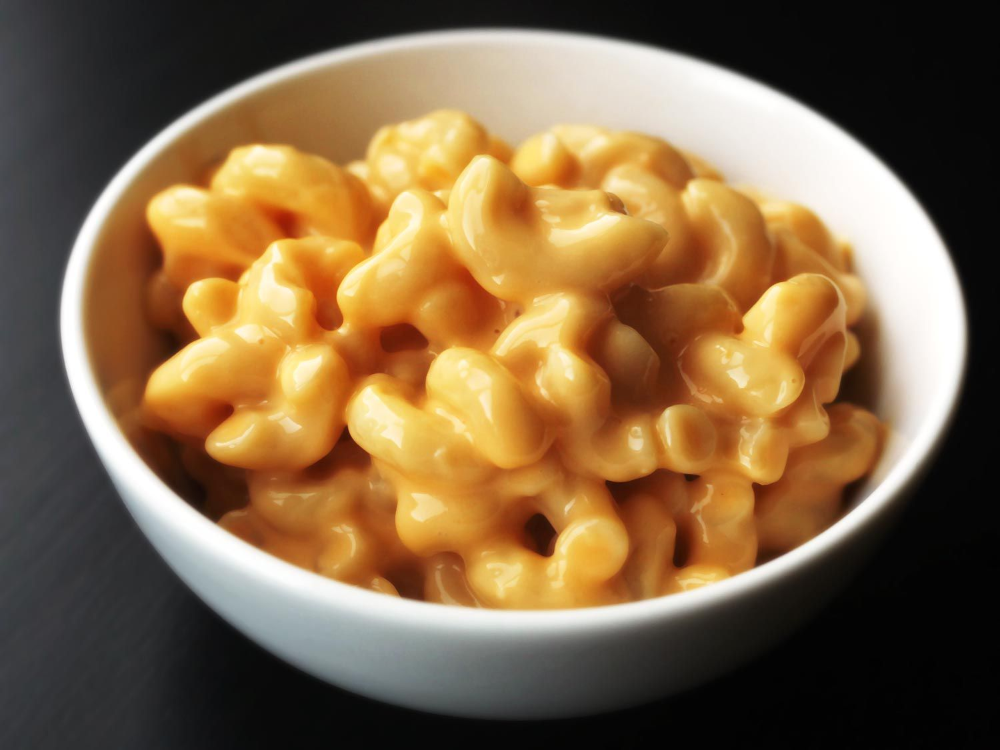

Mac N Cheese

Quick, easy, and tasty macaroni and cheese dish. Fancy, designer mac and cheese often costs forty or fifty dollars to prepare when you have so many expensive cheeses, but they aren't always the best tasting. This simple recipe is cheap and tasty.
Ingredients
- 1 box elbow macaroni
- 1/4 cup butter
- 1/4 cup all-purpose flour
- 1/2 teaspoon salt
- Ground black pepper to taste
- 2 cups of milk
- 2 cups of shredded Cheddar cheese
Steps
- Boil macaroni.
- Make a roux.
- Add cheese and macaroni.
Return to homepage